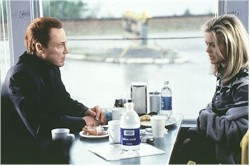

Contents | Features | Reviews | News | Archives | Store |
 |
|
| Movie Credits | Buy It! |
Excess Baggage
Review by Carrie
Gorringe
Posted 29 August 1997
| Directed by Marco Brambilla Starring Alicia Silverstone, Benicio Del Toro, Screenplay by Max D. Adams, Dick Clement |
Poor Emily T. Hope (Silverstone) – she’s seventeen, sexy and misunderstood. Mommy died when she was three, and her daddy (Thompson) makes a habit of ignoring her. Most teenagers would interpret this situation as an excuse to run off the rails in the usual anti-social fashion: drugs, drink and sex. Emily, however, is also wealthy (Daddy is a tycoon whose source of income is shady enough to prompt an SEC investigation), so she can indulge herself in upper-class teenage dysfunctionality, such as being expelled from tony boarding schools and engineering her own kidnapping. Oh, yes, Emily has this crazy idea that Daddy will pay the ransom and then throw his arms around his "safe" daughter, repenting all of his prior acts of negligence, and they will both live happily ever after. So Emily parks her BMW 850I in a parking garage, phones in ransom demands from her cell phone (disguising her voice, naturally), then, after a liberal application of duct tape to much of her body, tosses herself into the trunk, and waits for the police and Daddy to charge to the rescue.
But even the well-laid plans of mice, men and heiresses can go awry when a carnapper named Vincent (Del Toro) decides to get into the action. He drives off with this nice new car, stolen to order, not aware of Emily’s existence. Their mutual discovery makes each angry. Then Emily inadvertently starts a fire in the warehouse with other stolen automobiles, causing $200,000 in losses and bringing the wrath of the thugs, felicitously named Stick and Gus, (Turturro and Bowen) who have been sent to pick up the merchandise. This development puts Vincent’s head, and that of his partner, Greg (Connick) in a bit of a vise – or it might. Meanwhile, Emily’s strange Uncle Ray (Walken), a former CIA operative, volunteers to hunt her down. With all of the various twists and turns unfolding in their lives, Vincent and Emily, formerly enemies, decide they must combine forces to get what they want, and stay alive.
If the above plot synopsis sounds really intriguing, then consider its one-dimensional counterpart, stripped beyond its essences to its very redundancies, and this, unfortunately, is the final product. We won’t even consider the geographic stupidity of shooting a Seattle-based movie in Vancouver (you may get thirty percent more film for your money, but you also get ninety per cent less credibility in your visuals). When conducting a forensic investigation of the cause of death, one gets a depressingly long list of factors. There is the script, which weights down all of the characters with unfunny lines and an unimaginative development of premises, thereby allowing the action to writhe in agony on the screen until it is stone-cold dead; if a film can render such an off-the-wall talent such as Christopher Walken as bland as wallpaper paste, then there are truly some dubious merit awards to be handed out. Moreover, the key characters are drawn as nothing more than mere stock figures: the mean, rich daddy, the spoiled brat, and so on. Stock figures can be fine, if the actors have something to work with, but, as stated earlier, they don’t. Consider the plight of leading man Del Toro, droning on and on unconvincingly in a voice and with mannerisms that suggest the worst selection of traits from Mumblin’ Marlon and Sly Stallone combined; if this guy had flames shooting from both ears and he claimed there was a fire, I’d still need some extra evidence before taking action. Emily’s Daddy Bigbucks is so heartless that one wonders just why she opted for kidnapping instead of parricide; only his employees would mourn his absence, and that’s only because he wouldn’t be around to sign their paychecks. Discussing the flat and petulant performance given by Silverstone herself would be adding to the list of redundancies already present. Only poor Harry Connick jr., Turturro and Bowen come closest to realizing whatever comedic ideals this film might have possessed, and they get no assistance from anyone else in this endeavor. The model for villainy here is not the car thief but the used-car salesman, and Brambilla and co. will have a real task on their hands persuading audiences to buy the cinematic equivalent of an ’86 Yugo with rusty fenders.
Contents | Features | Reviews | News | Archives | Store
Copyright © 1999 by Nitrate Productions, Inc. All Rights Reserved.